DAILY JOURNAL
每日详记
01
深圳 → 雅加达 → 泗水 → Bromo 山脚
- 集合出发 · 深圳宝安机场 T3 Shenzhen Bao'an International Airport · SZX，建议提前 3h 抵达
- 14:10–18:20 春秋航空 9C7341 · 深圳 SZX → 雅加达 CGK Soekarno–Hatta International Airport
- 雅加达转机，可在机场简餐 / 整理行李
- 21:00–22:40 连城航空 QG728 · 雅加达 CGK → 泗水 SUB Juanda International Airport
- 22:40 抵达泗水 · 朱安达国际机场 SUB，专车接机，直接前往 Bromo 山脚（约 3h）
- 次日 02:30 抵达 Bromo 山脚 Mount Bromo / Cemoro Lawang · 不入住酒店，短暂休整后直接上山
建议将厚外套、充电宝、洗漱用品放在随身背包；D1 不安排酒店，减少泗水市区绕路和入住等待。
02
Bromo 日出 · 沙海 · 火山口 → Ijen

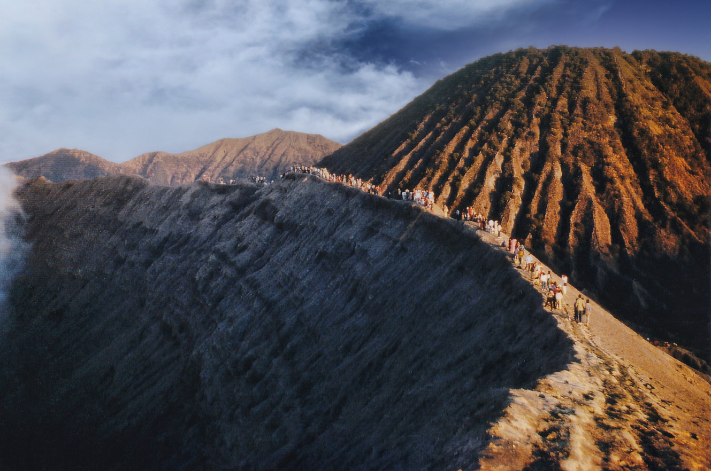
- 03:00 出发 · 乘吉普车前往 King Kong 观景台 King Kong Hill Viewpoint（约 40min）
- 04:30 日出 · 拍摄 Bromo、Batok、Semeru 同框
- 日出后吉普车穿越沙海，抵达火山口脚下
- 骑马或徒步登火山口阶梯，硫磺味浓烈建议戴口罩
- 08:30 返回山脚集合点 · 在 Cemoro Lawang 主街火山观景咖啡区 Cemoro Lawang 早餐、简单擦洗，姜茶配三明治补充体力（前一夜未住酒店，用随身洗漱包在休息区处理）
- 10:00 出发前往 Ijen Ijen Crater / Kawah Ijen · 车程约 4–5h，途经 Banyuwangi 用午餐
- 13:00 途中午餐 · 外南梦简餐区 Ketapang Harbour · Banyuwangi Roadside Warungs · 东爪哇家常黄姜饭 + 炒饭 + 沙爹，7 人围坐歇脚补给（人均约 ¥40）
- 18:30 入住 Bobocabin Ijen Bobocabin Ijen Banyuwangi · 放行李后于山脚 Warung 晚餐，烤鱼 + 时蔬 + 黄姜饭，海拔低、气温舒适
Bromo 凌晨气温约 5–10°C，务必穿厚外套；火山口阶梯陡峭，穿防滑鞋。
03
Ijen 蓝火 · 硫酸湖 → 轮渡 → 罗威纳
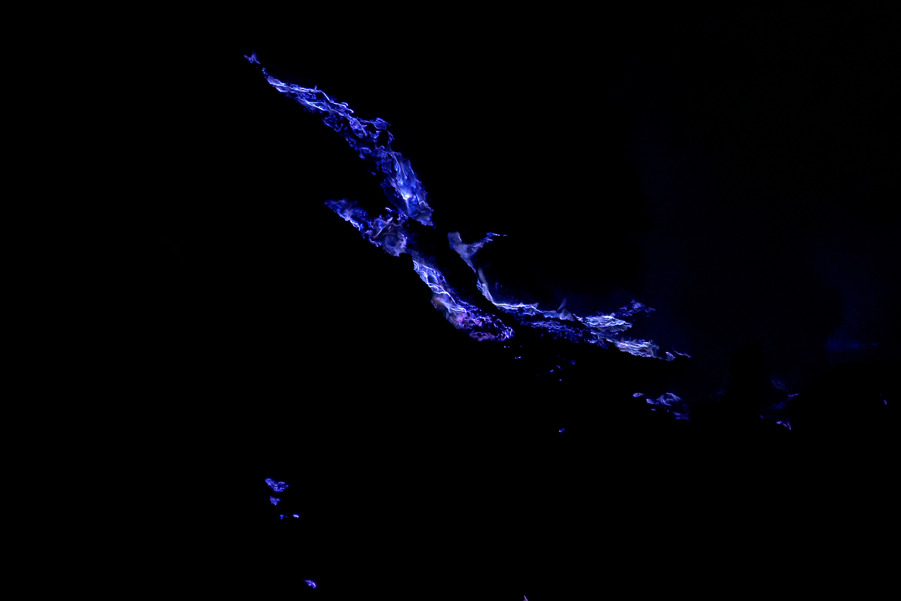
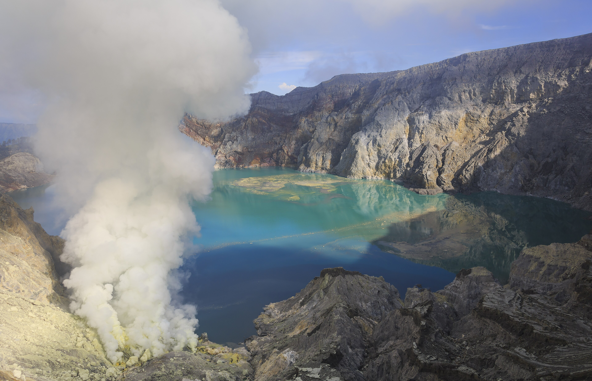
- 01:00 起床 · 02:00 Ijen Crater 登山（约 2h 到火山口）
- 蓝火 · 下到火山口底部看蓝色火焰，需戴防毒面具
- 硫酸湖 · 日出后湖面呈翡翠色，矿工搬运硫磺出片
- 07:00 返回 Bobocabin · 早餐、补觉、退房
- 10:00 前往外南梦码头 Ketapang Ferry Port · 车程约 1h
- 轮渡 · Ketapang（外南梦）→ Gilimanuk（吉利马努克）（约 1h），人车同船
- 11:30 午餐 · 吉利马努克镇中心美食街 Jl. Raya Gilimanuk · 渡轮码头靠岸后 5 分钟可达；推荐尝试香料烤鸡、黄姜饭与参巴酱，7 人可点整鸡分享（人均约 ¥45）
- 上岸后乘车沿北巴厘海岸线前往罗威纳 Lovina Beach（约 2h）
- 16:00 入住 Padmasari Resort Lovina
- 晚餐 · 罗威纳海滨公路餐饮带 Jl. Raya Lovina · Pemaron · 位于回酒店主路；适合点烤乳猪、烤鱼和海鲜拼盘，临街店铺选择多，7 人可分摊海鲜大份（人均约 ¥70）
Ijen 徒步强度大，下坡伤膝，建议带登山杖；蓝火区域硫磺烟呛，不要久留。
04
罗威纳追海豚 · 古树 · 咖啡庄园 · Alas 梯田俱乐部 · 乌布皇宫 · 乌布市场
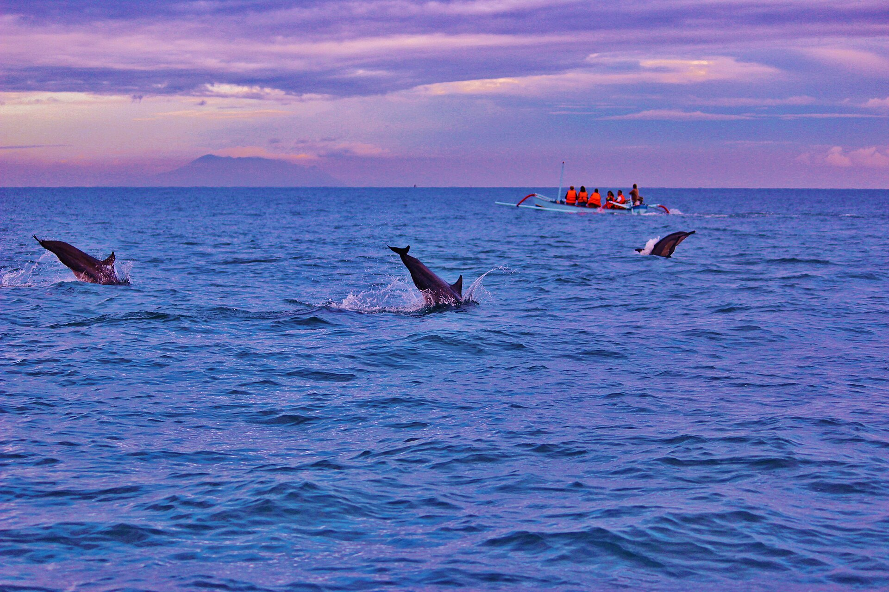
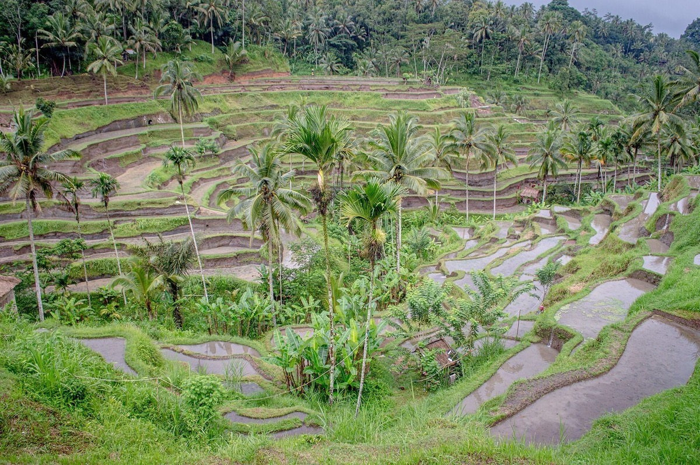
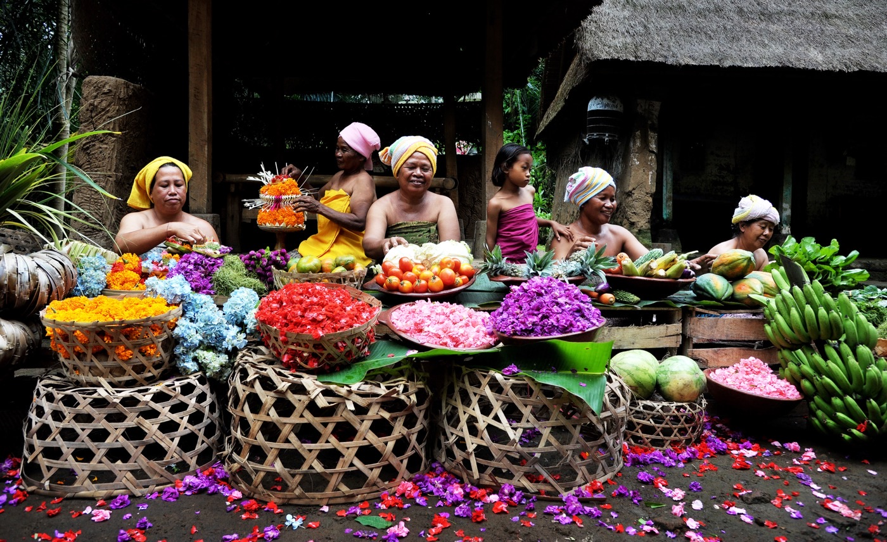
- 05:30 出海 Lovina Beach Dolphin Watching · 乘蜘蛛船追海豚，海上约 2h
- 08:00 返回酒店早餐 · 退房后前往乌布方向
- 途中 · 千年古树 The Giant Banyan Tree, Tegalalang · 路过停车拍张照，绿荫如盖的参天古榕（约 20min）
- 咖啡庄园 Bali Coffee Plantation / 猫屎咖啡 Luwak Coffee · 参观巴厘咖啡种植园，了解猫屎咖啡制作，品尝现磨咖啡与各式花草茶（约 40min）
- 11:00 阿拉斯哈鲁姆梯田俱乐部 Alas Harum · 丛林秋千、无边泳池；午餐安排在 Tegalalang 梯田谷景观餐饮带（约 2.5h）
- 14:30 乌布皇宫 / 乌布市场 Ubud Palace / Ubud Art Market · 巴厘传统建筑与手工艺品（约 1.5h）
- 16:30 入住乌布 Airbnb 别墅 AJV Luxury Villa, Ubud · 距乌布市中心步行 5 分钟，4 卧室豪华别墅
- 晚餐 · 乌布市中心稻田景观餐厅区 Jl. Raya Ubud · 距别墅约 10min；以脆皮鸭、烤猪饭与印尼菜为主，适合 7 人提前订位（人均约 ¥90）
追海豚时海面风大，建议带薄外套；途中千年古树与咖啡庄园为乌布方向顺路停留点，古树仅做短暂停留拍照，咖啡庄园可免费品尝猫屎咖啡样品；Alas Harum 梯田俱乐部含秋千、鸟巢、泳池等网红打卡点；乌布 Airbnb 为整租别墅，4 卧室适合 7 人团入住。
05
蓝梦岛 DSD 潜水 + 浮潜 + 环岛 · 夜宿佩妮达
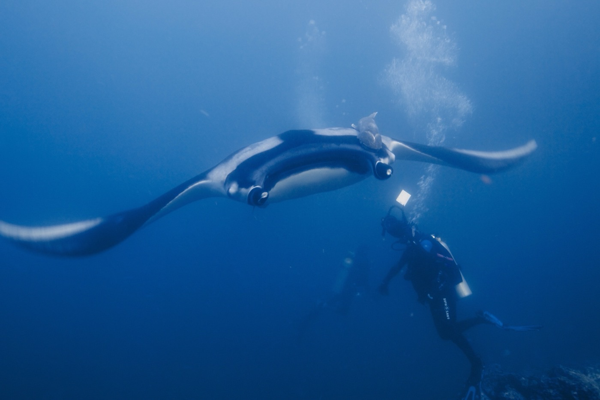
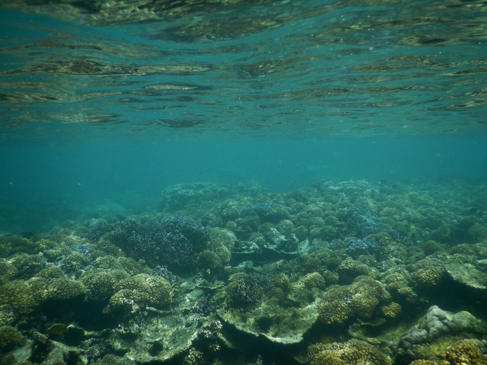
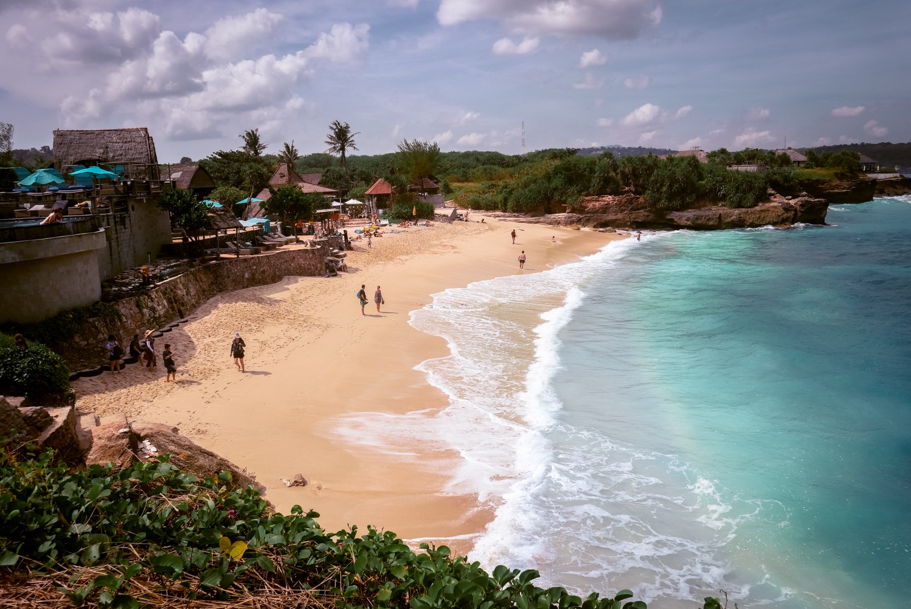
- 08:00 从乌布 Airbnb 别墅出发 AJV Luxury Villa, Ubud · 前往 Sanur 码头 Sanur Harbour（乌布出发约 1h10m）
- 09:30 快船前往蓝梦岛 Nusa Lembongan · 约 30min
- 10:30 中文教练泳池教学 · 学习装备使用与水下技巧
- 12:00 岛上简餐 · 含午餐
- 13:00 第一潜 · Manta Point Manta Point / Nusa Penida · 看魔鬼鱼，约 45min
- 14:30 浮潜 · 蓝梦岛珊瑚区 Snorkeling at Coral Garden / Mushroom Bay · 热带鱼群与珊瑚礁，约 40min
- 15:30 第二潜 · Crystal Bay Crystal Bay, Nusa Penida · 珊瑚花园，约 45min
- 16:30 蓝梦岛环岛游 Devil's Tear / Dream Beach / Mangrove Forest · 恶魔的眼泪、梦幻沙滩、红树林，约 1h
- 17:30 蓝梦岛 → 佩妮达 · 岛间快艇衔接，约 30min
- 18:00 入住 Alana Penida Hotel Jl. Batumulapan, Batununggul, Nusa Penida · 东海岸海景房，办理入住后晚餐
- 晚餐 · 佩妮达东海岸本地餐饮带 Batununggul Beach Road · 距酒店步行可达；以现烤鱼、炒饭、炒面与鲜椰青为主，适合潜水后轻松用餐（人均约 ¥60）
DSD 无需潜水证，中文教练 1v2 带潜；蓝梦岛水流较强，务必紧跟教练；浮潜和环岛为拼车拼船一日游套餐内容；恶魔的眼泪拍照注意安全，浪大时远离悬崖边缘；潜水后 24h 内不能坐飞机。
06
佩妮达西线 · 返回努沙杜瓦
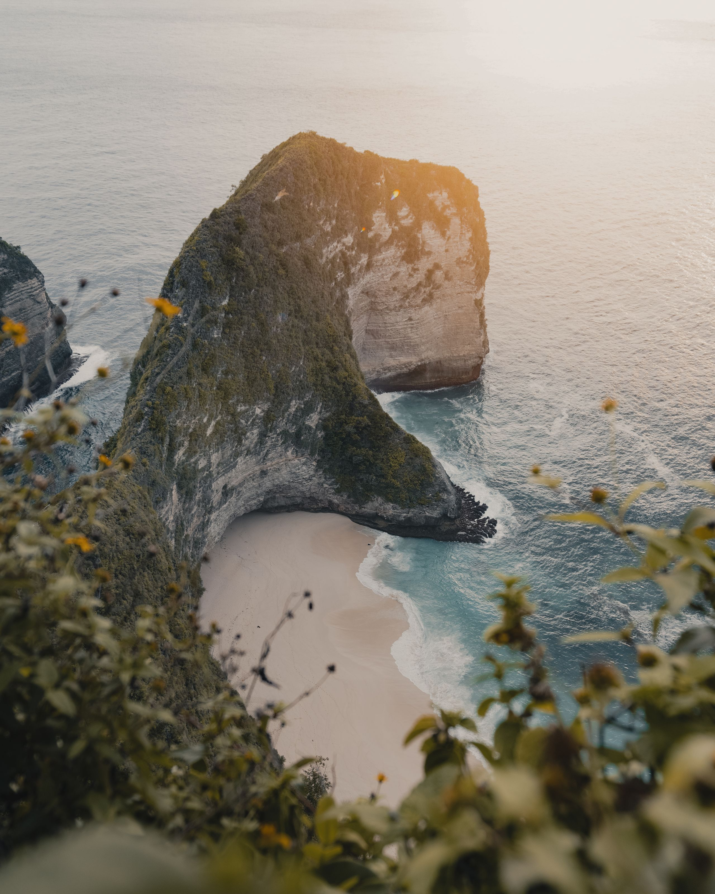
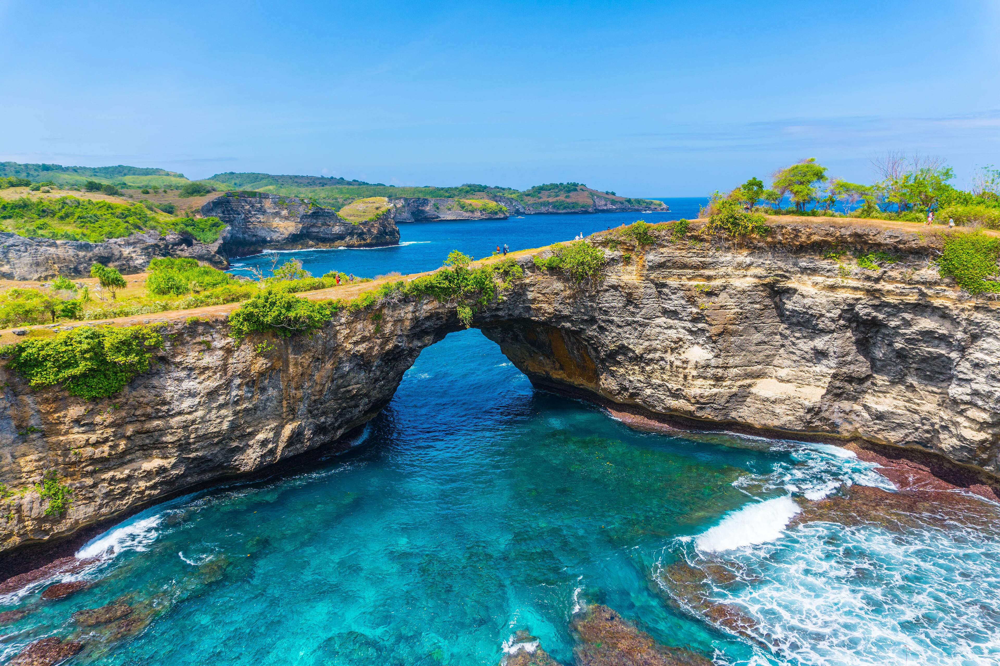
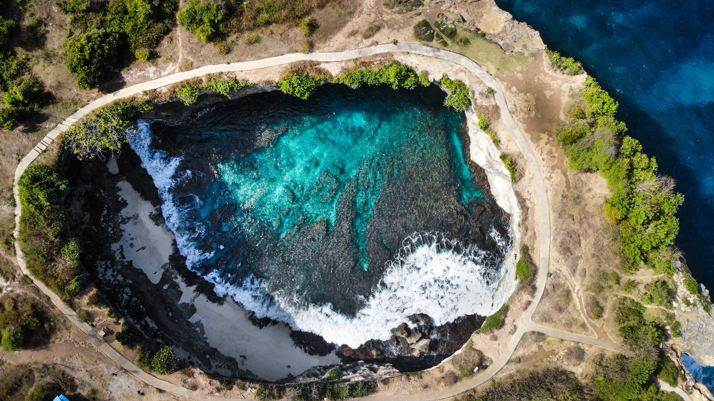
- 07:30 Alana Penida Hotel 早餐 · 司机到店接，直接开始佩妮达西线
- 09:00 精灵坠崖 Kelingking Beach · T-Rex 悬崖，可徒步下沙滩（约 1h）
- 11:30 天仙裂痕 Pasih Uug / Broken Beach · 天然拱桥下碧绿 lagoon
- 12:30 午餐 佩妮达西线路边 Warung · Crystal Bay 附近简餐点 · 岛上简餐（炒饭/炒面+软饮）
- 13:30 天神浴池 Angel's Billabong · 天然无边泳池，注意潮汐
- 15:30 前往佩妮达码头 Nusa Penida Harbour · 快船返回 Sanur
- 17:30 入住乌加桑 Airbnb 别墅 Stylish 4BR Villa near Savaya, Ungasan · 靠近 Savaya Beach Club，4 卧室时尚别墅，私人泳池
- 晚餐 · 乌鲁瓦图悬崖高端餐饮带 Jl. Pantai Pandawa · 距别墅约 15min；优先订日落位，可选择西班牙菜、海鲜饭或海景印尼菜（人均约 ¥150）
佩妮达路况颠簸，建议穿运动鞋；精灵坠崖下沙滩需 40min 陡峭徒步，量力而行；今晚入住巴厘岛南部 Ungasan 地区的 Airbnb 整租别墅。
07
自由活动日 · Kono Villas（Ungasan）
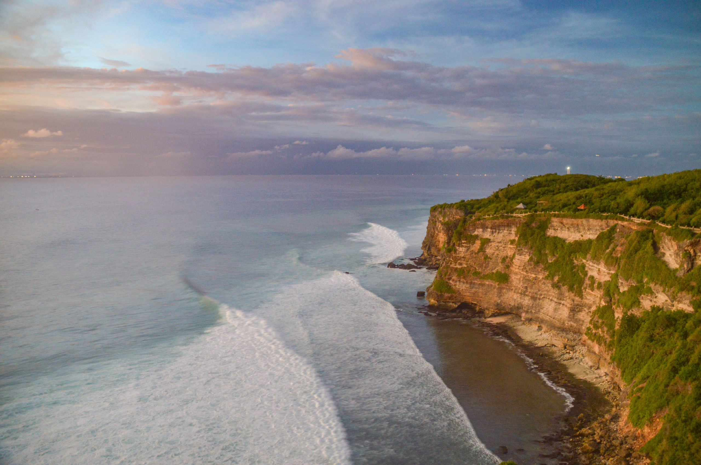
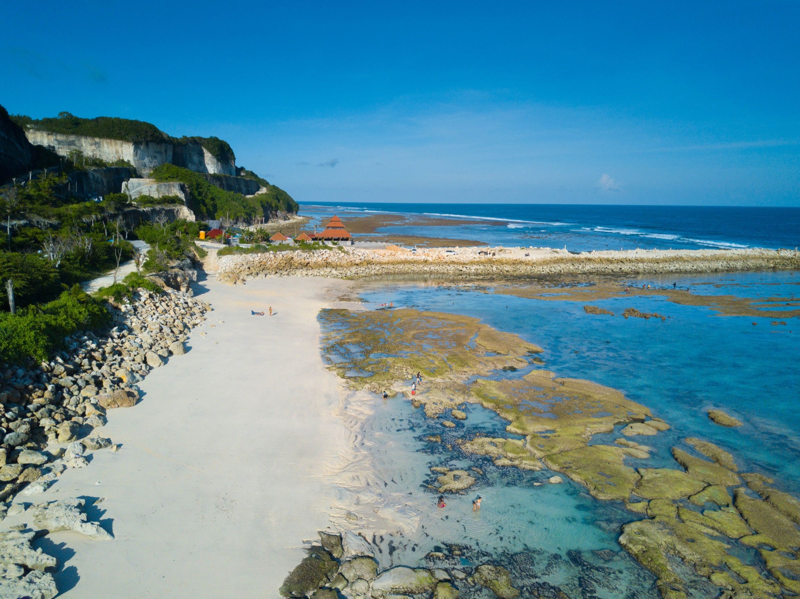
- 自然醒 · 慢早餐 · 别墅内自由安排，无需早起
- 推荐：乌鲁瓦图情人崖 Uluwatu Temple / Pura Luhur Uluwatu · 悬崖寺庙 + 猴子 + 壮观日落（门票自理，约 ¥50/人）
- 推荐：滑翔伞 Tandem Paragliding, South Bali · 自理项目，¥300/人，约 15min 飞行体验，需提前预约
- 推荐：Melasti 沙滩 Melasti Beach, Ungasan · 白沙碧海，日落时分最美
- 下午茶 / 日落酒 · Pandawa 悬崖海滩俱乐部带 Pandawa Cliff · 距别墅近，按当天日落时间选择海景位（消费自理）
- 午餐 · 乌鲁瓦图寺庙路冲浪酒吧街 Jl. Uluwatu · 轻食、早午餐与鸡尾酒选择集中，可看浪点（人均约 ¥100，消费自理）
- 入住 Kono Villas & Resort Jl. Goa Gong, Ungasan · 晚上可前往 Pandawa 悬崖海景餐饮带用餐，或由别墅私人厨师安排 BBQ（消费自理）
D7 地接不负责，全天自理。滑翔伞 ¥300/人需自行预约；推荐景点均可打车前往（Grab 很方便）；也可以在别墅泳池躺平一整天。注意次日 D8 需早起送机。
08
巴厘岛 → 科莫多 · 包快艇日落团
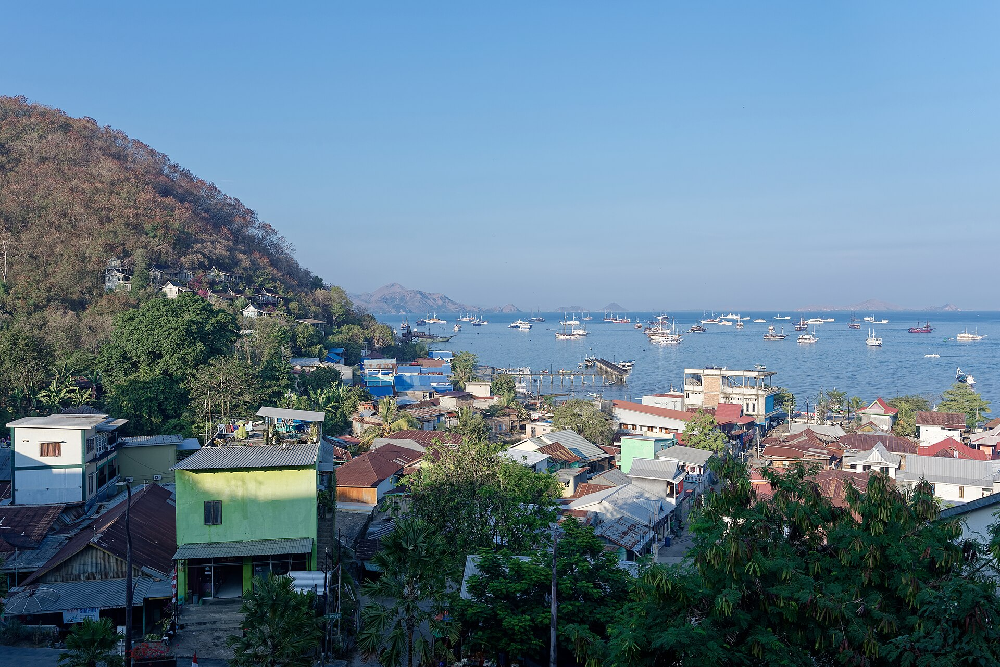
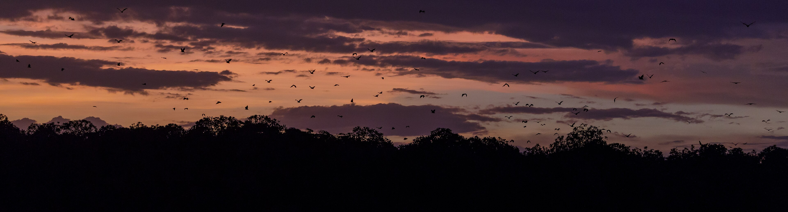
- 07:00 退房 · Kono 别墅简餐后出发，车程约 30min
- 07:00 送机 Kono Villas & Resort → Ngurah Rai International Airport · DPS
- 09:00–10:10 印尼狮航 QZ642 · 巴厘岛 DPS → 下拉布安 LBJ Komodo International Airport · LBJ
- 10:10 抵达下拉布安 · 接机自理，前往 Bintang Flores Hotel
- 11:00 入住 Bintang Flores Hotel Jl. Pantai Pede, Labuan Bajo · 海滨酒店，泳池/私人海滩休息
- 16:00 包快艇日落团 Kelor Island · Menjerite · Kalong · Kelor 岛轻徒步 + Menjerite 浮潜 + Kalong 蝙蝠日落
- 19:00 返回 Bintang Flores Hotel · 晚餐安排在 拉布汉巴焦码头步行街海滨餐饮区 Jl. Soekarno Hatta · 以烤龙虾、沙爹、印尼菜和西餐为主；沿街步行比价后入座（人均约 ¥80）
日落团含浮潜装备与救生衣；Kalong 蝙蝠出没时间约 18:00–18:30。注意：科莫多接机不含，需自行安排。
09
科莫多 6 景点包快艇一日游
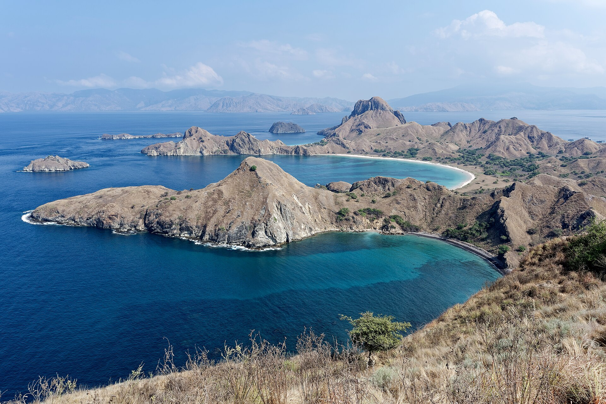
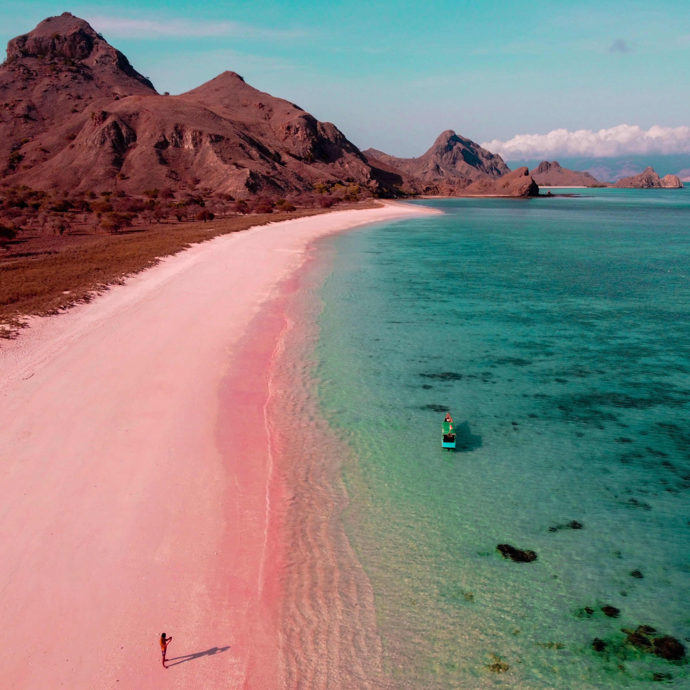
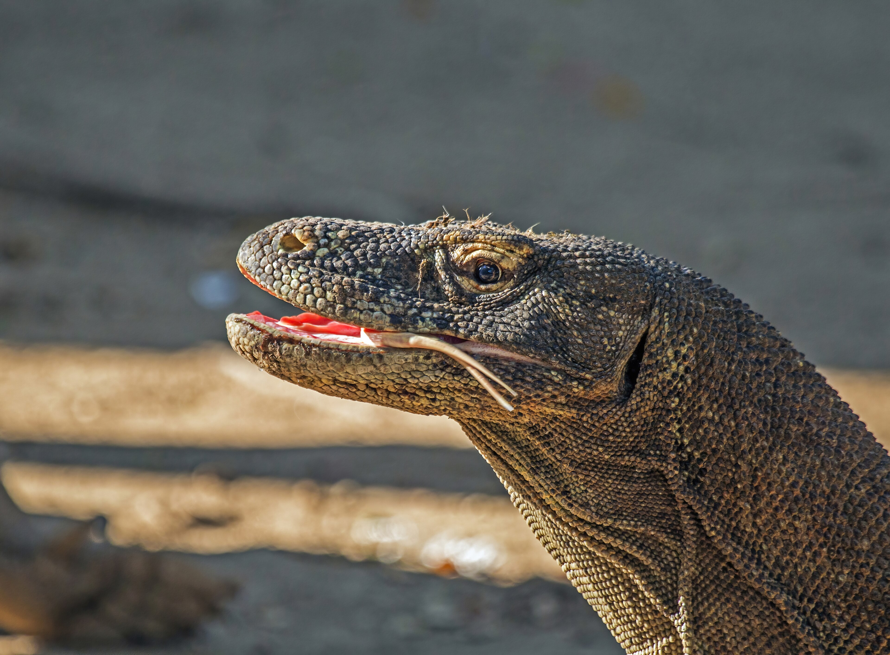
- 07:00 出发 Labuan Bajo Harbour · 包快艇出海（MAC5 或同级）
- 08:00 帕达尔岛 Padar Island · 登顶看三色海湾（约 30min 徒步）
- 10:00 粉红沙滩 Pink Beach, Komodo · 粉色珊瑚沙，浮潜拍照
- 11:30 科莫多岛寻龙 Komodo Island / Loh Liang · 护林员带领，观察科莫多巨蜥
- 12:30 船上午餐 · 简餐+水果
- 14:00 魔鬼鱼浮潜 Manta Point Komodo · 视海况安排
- 15:00 月牙沙洲 Taka Makassar Sandbank · 果冻海
- 16:00 卡纳瓦岛 Kanawa Island · 近岸浮潜，珊瑚丰富
- 17:00 返回酒店 · 晚餐安排在 拉布汉巴焦镇中心海鲜大排档区 Jl. Soekarno Hatta · 本地人常去的平价海鲜带，适合点辣椒炒蟹、烤鱼和米饭，份量适合多人分享（人均约 ¥60）
帕达尔需爬台阶，穿运动鞋；科莫多龙有攻击性，紧跟护林员，保持 5m 以上距离。
10
科莫多 → 雅加达 → 深圳
- 上午自由活动 · 补觉、海边咖啡、整理行李
- 12:00 退房 · 镇上午餐 / 海边咖啡
- 14:00 送机 Bintang Flores Hotel → Komodo International Airport · LBJ · 车程约 10min
- 15:55–17:20 印尼狮航 QZ861 · 下拉布安 LBJ → 雅加达 CGK Soekarno–Hatta International Airport
- 17:20 抵达雅加达 · 取行李，寄存大件行李
- 18:00 机场旁商业区晚餐 AirportHUB · CGK Terminal 3 · T3 航站楼餐饮层选择集中，适合沙爹、炒饭或简餐，预留足够时间回机场安检
- 20:15 返回 CGK T3 · 预留值机、托运、安检与出境时间
- 次日 00:20–07:00 南方航空 CZ8354 China Southern · CGK → SZX · 抵达深圳
- 抵达深圳，行程结束
科莫多送机不含在地接内，需自理（约 10min 车程）；雅加达只在机场范围内活动；如果国内段延误超过 1 小时，直接留在机场用餐。